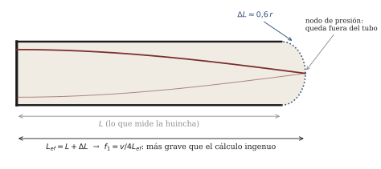

Vientos y lutería: la columna de aire a la medida
Sesión 12 · Curso Acústica Musical UC Objetivos que cubre: OA1.2 (predecir la nota de un tubo por su longitud y explicar la desviación), OA1.3 (la excitación soplada como oscilación auto-sostenida; tubos abiertos y cerrados y sus registros), OA5.2 (el ciclo construir–medir–explicar, vivido en el taller).
¿Qué hace de válvula en una flauta?
El ticket de la semana pasada quedó cobrado. En la cuerda frotada había una válvula visible: la fricción, que agarra y suelta, con la cuerda de metrónomo. En la flauta no hay nada que pegue ni suelte — y sin embargo la nota es estable, así que algo tiene que estar entregando energía en ciclos sincronizados. La respuesta es elegante: la válvula es el propio chorro de aire.
Cuando usted sopla una flauta (o un tubo del taller, o una botella), el chorro fino que sale de sus labios cruza un espacio abierto y va a dar contra un borde afilado: el bisel. Un chorro contra un borde es un sistema indeciso: puede pasar por dentro del tubo o por fuera, y cualquier corriente lateral mínima lo desvía. Ahora bien, el aire del tubo no está quieto: si la columna está oscilando, por la embocadura entra y sale un vaivén de aire. Ese vaivén empuja al chorro alternadamente hacia adentro y hacia afuera del bisel — y cada vez que el chorro entra, empuja la oscilación de la columna justo a tiempo. El chorro alimenta a la columna y la columna conmuta al chorro: es exactamente el régimen de oscilación de s10 y s11, con el aire haciendo de válvula y la columna de metrónomo (Benade 1990, cap. 20, sec. 20.2, desarrolla el concepto de régimen; C&G, cap. 8, pp. 259–302, lo aplica a las maderas y flautas).
Por eso soplar más fuerte no sube la nota de a poco: la afinación no la decide el soplo sino la columna, igual que en s11 no la decidía el arco sino la cuerda. El soplo elige, a lo más, cuál modo de la columna manda — y a eso vamos.
¿Por qué un tubo tiene nota, y cómo se calcula?
La columna de aire encerrada en un tubo es un sistema con modos, como la cuerda de s03: hay formas de oscilar que le salen naturales, con sus frecuencias características. Para un tubo abierto en ambos extremos (como la flauta, donde la embocadura abierta cuenta como extremo abierto), el modo más grave tiene
f_1 = \frac{v}{2L}
con v \approx 343 m/s (a 20 °C) y L el largo del tubo. Y los modos siguientes caen en 2f_1, 3f_1, 4f_1, \dots: la serie armónica completa. Un tubo cerrado en un extremo y abierto en el otro (el tubo tapado del taller; el clarinete, cerrado por la caña) hace algo distinto en los dos frentes:
f_1 = \frac{v}{4L}
— una octava más grave que el mismo tubo abierto — y sus modos caen solo en 3f_1, 5f_1, 7f_1, \dots: los armónicos impares. La intuición sin fórmula: el extremo abierto exige que la presión no se acumule (el aire escapa), el extremo cerrado la exige máxima (el aire rebota). Un tubo cerrado-abierto tiene una condición distinta en cada punta, y solo un cuarto de onda cabe entre ambas; de ahí el 4L, y de ahí que solo los patrones impares calcen (figura 1).

Estas dos fórmulas son toda la lutería de la sesión. Con v = 343 m/s, un La4 de 440 Hz pide un tubo tapado de L = 343/(4 \times 440) \approx 0{,}195 m: diecinueve centímetros y medio. Proporciones puras: el doble de largo, una octava abajo; la mitad, una octava arriba.
La docena del clarinete y la octava de la flauta
El menú de modos explica el fenómeno de la escucha del día. Al soplar más fuerte, el chorro deja de sostener el modo grave y engancha el siguiente disponible. En la flauta (abierta), el siguiente es 2f_1: la nota salta la octava. En el tubo tapado del taller — y en el clarinete — el siguiente modo disponible no es 2f_1 (no existe: es par) sino 3f_1: el salto es una octava más una quinta, la docena (12.ª). Mismo gesto, intervalos distintos, y la diferencia la fija la física de los extremos del tubo (ROS, cap. 12, dedica el capítulo a esta comparación; ROE, secs. 4.4–4.6, da el desarrollo de columnas de aire en español).
El salto de registro no es un defecto: es el mecanismo con que los vientos multiplican sus notas. Una flauta con seis agujeros daría solo siete notas; con el segundo registro, la misma digitación vale dos veces.
Agujeros: cortar el tubo sin cortarlo
Un agujero lateral abierto es una fuga de presión: para la onda, el tubo “termina” aproximadamente donde está el primer agujero abierto. Destapar agujeros de abajo hacia arriba equivale a ir acortando el tubo — una escala fabricada con un solo tubo y ocho dedos. En la sesión lo vimos sobre la flauta real: cada agujero destapado subió la nota a saltos, y dos digitaciones distintas pudieron fabricar casi la misma nota (horquillas), porque hay más de una manera de construir el mismo “largo efectivo” (figura 2).

La versión fina de esta historia — que un agujero abierto no corta el tubo del todo, y que la red de agujeros abiertos deja pasar los agudos por encima de una frecuencia de corte característica que firma el timbre de cada madera — es el sello de Benade (1990, cap. 21, secs. 21.1 y 21.4; cap. 22, sec. 22.4). En este curso queda como mención: nos basta con la primera aproximación, que es la que usted usó para construir.
¿Por qué todos los tubos salieron bajos?
El resultado más instructivo del taller fue un “error” colectivo: los tres grupos cortaron su tubo al largo calculado, y las tres notas midieron bajas, todas, en un orden parecido de decenas de cents. Un error aleatorio se reparte para ambos lados; uno sistemático apunta a que el modelo olvida algo.
Lo que olvida es que el extremo abierto de un tubo no es una frontera exacta. La columna de aire que vibra no termina en el borde del PVC: sobresale una puntita hacia afuera, porque el aire inmediatamente exterior también se mueve con ella. La columna efectiva es un poco más larga que el tubo, y f_1 = v/4L con el L de la huincha da entonces una frecuencia un poco más alta que la real: por eso lo medido quedó abajo de lo predicho. Es la corrección de extremo (figura 3), y es la razón de que la lutería real afine como usted afinó: cortando de menos a más, midiendo cada vez.

Recuadro opcional (el número fino). Para un tubo cilíndrico sin pestaña, la columna sobresale del extremo abierto aproximadamente 0{,}6 \times el radio interior del tubo (dato estándar de acústica de tubos; ver ROS, cap. 4, y C&G, cap. 5). Para el PVC del taller (radio interior ≈ 8–10 mm [POR VERIFICAR** según el tubo comprado**]) son unos 5–6 mm de columna extra: en un tubo de 20 cm, un 3 % — que en cents (recuerde s09: 1 semitono ≈ 6 % ≈ 100 cents) es del orden de 50 cents. Compare con la desviación que midió su grupo. En la embocadura soplada la corrección real es mayor y depende del soplo: por eso la tratamos como cualitativa.
Los vientos se afinan calientes
El gancho del módulo 2 dejó otra predicción fallida productiva: casi todos esperaban que la flauta calentada bajara (“el metal dilata, el tubo se alarga”). Subió. La clave es que lo que vibra no es el tubo sino el aire de adentro, y la velocidad del sonido en el aire crece con la temperatura:
Recuadro: v depende de la temperatura. En aire, v \approx 331 + 0{,}6\,T m/s, con T en °C (dato estándar; C&G, cap. 1 y cap. 5). A 20 °C: ≈ 343 m/s. Cada grado suma ≈ 0,6 m/s, es decir ≈ 0,17 % en f_1 — unos 3 cents por °C. El aliento del ejecutante puede subir la columna varios grados: decenas de cents, lo que el afinador mostró.
La dilatación del metal existe, pero es un efecto cientos de veces más chico. Por eso los vientos llegan “bajos” con el instrumento frío, suben mientras se calientan, y la orquesta afina cuando ya soplaron un rato (C&G, cap. 5, trae el ejemplo numérico de la flauta). Las cuerdas, para su desgracia, van para el otro lado — pero ese contraste ya lo razonó usted en la guía.
¿Y el material? El debate del PVC
El cierre dejó una pregunta incómoda y útil: los tubos del curso son PVC de ferretería y afinaron igual que cualquier tubo “noble” del mismo largo. Si lo que vibra es la columna de aire, y las paredes solo la contienen, ¿cuánto importa de qué está hecho el tubo? Benade (1990, cap. 22, sec. 22.7) hizo la pregunta en serio — con mediciones — y su respuesta escandaliza a medio mundo musical: para paredes lisas, rígidas y sin fugas, la geometría interior domina y el material casi no toca al sonido. El “casi” (rugosidad, bordes de agujeros, fugas, respuesta del ejecutante que siente distinto un instrumento pesado) es donde el debate sigue vivo. Queda como cultura general del curso — y como advertencia científica: antes de atribuir un timbre al material, hay que descartar todo lo que cambia junto con él.
Síntesis
- En los vientos, la válvula es el propio chorro sobre el bisel, y la columna de aire le pone el metrónomo: mismo régimen de oscilación que la cuerda frotada, sin nada que pegue ni suelte.
- Tubo abierto-abierto: f_1 = v/2L, serie armónica completa, salta la octava. Tubo cerrado-abierto: f_1 = v/4L, solo armónicos impares, salta la docena.
- Un agujero abierto acorta el tubo efectivo (la red de agujeros y su frecuencia de corte quedan de mención).
- La columna sobresale del tubo: lo construido mide sistemáticamente bajo respecto del cálculo ingenuo, y por eso se afina cortando de menos a más.
- v crece con la temperatura (≈ 0,6 m/s por °C): los vientos se afinan calientes.
Hacia la sesión 13
Su ticket de salida quedó apuntando al instrumento que usted lleva puesto: al cantar una vocal hay una “cuerda” (los pliegues vocales) y un “tubo” (la garganta y la boca). ¿Qué afina usted cuando canta más agudo — la cuerda, el tubo, o cada uno por su lado? La sesión 13 abre con la Prueba 2 (temario s08–s12; lo de hoy entra solo con ítems básicos) y dedica el módulo 2, liviano, a esa pregunta: la voz como fuente y filtro.
Referencias y lectura complementaria
- Campbell, M. & Greated, C. (1987). The Musician’s Guide to Acoustics. Oxford UP — cap. 8, pp. 259–302 (maderas y flautas, con mediciones propias en flautas); cap. 5, pp. 183–202 (ondas en tubos; afinación vs. temperatura).
- Benade, A. H. (1990). Fundamentals of Musical Acoustics, 2.ª ed. Dover — cap. 20, sec. 20.2 (regímenes de oscilación); cap. 21, secs. 21.1, 21.4 y 21.5 (curvas de resonancia, agujeros, registros); cap. 22, secs. 22.5 (familia de flautas) y 22.7 (el material de las paredes).
- Rossing, T. D., Moore, F. R. & Wheeler, P. A. (2002). The Science of Sound, 3.ª ed. — cap. 12 (maderas: registros, la 12.ª del clarinete vs. la 8.ª de la flauta, tubos cónicos y cilíndricos); cap. 4 (tubos y resonancia, para ejercicios).
- Roederer, J. G. (1997). Acústica y Psicoacústica de la Música. Ricordi — secs. 4.4–4.6 (columnas de aire e instrumentos de viento). Lectura alternativa en español.